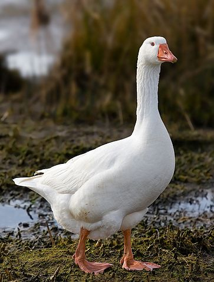
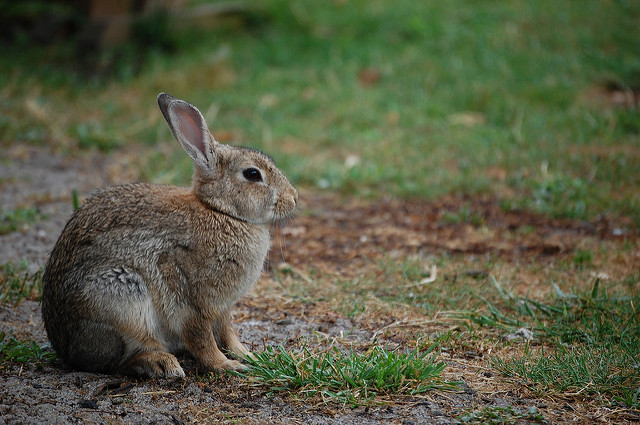
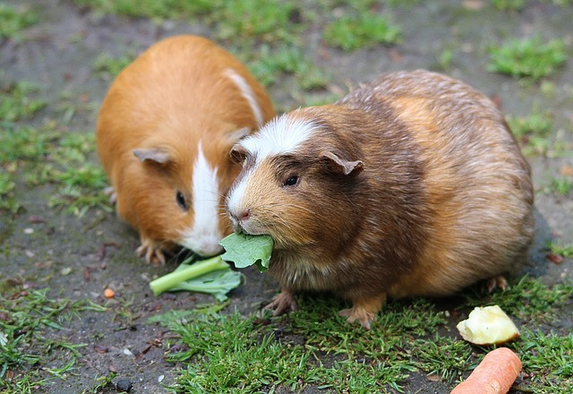
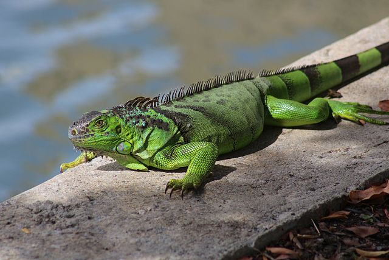
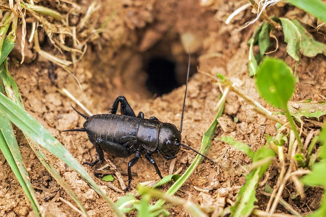
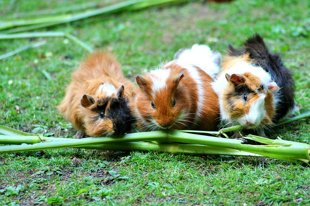

Micro livestocks - Farming small animals
Humans have been keeping farm animals for thousands of years. However due to the increasing human populations and pressure on resources, farmers and households have to look for alternatives farming methods and practices. One such practice is keeping of micro livestocks.
What are micro livestocks?
Micro livestocks refers to animals kept in a farm that:
- are small in size.
- require little space for keeping them.
- They can be reared in a homestead.
Some of these micro livestocks are:
Poultry

Chicken
Ducks
Geese
Turkey
Guinea fowls
Pigeon
Quail
Rabbits

Domestic rabbits
Rodents

Grasscutter
Guinea pigs
Lizards

Green iguana
Black iguana
Insects

Crickets
Bees
Microbreeds
The products
The micro livestocks provide meat, skin and eggs.
Their benefits
- The animals are cheaper to buy.
- They reproduce much faster than the larger livestock.
- They require little space to raise and take care of.
- They can easily forage for food in their environment.
- They don't compete for the same kind of food with humans.
- Little of no labour requirements.
Feeding

Most of the micro livestocks feed on discards from humans. eg. vegetable waste, kitchen waste and industry by-products.
Some forage for food in their environment and around the home compound. eg fallen seed, worms and insects.
Financial impact
Micro livestocks impact the households finances positively.
- They save on money that would have been used to buy meat since they provide meat to low income house holds. They are able to avert cases of malnutrition that would arise in low income house holds that would not afford to buy meat.
- When sold, they are a source of income for the house holds. Due to their small sizes, they consume less so they do not require a large capital to start raising them.
Resources
- https://www.nap.edu/catalog/1831/microlivestock-little-known-small-animals-with-a-promising-economic-future
- https://www.appropedia.org/Micro-livestock:_Little-known_Small_Animals_with_a_Promising_Economic_Future_5